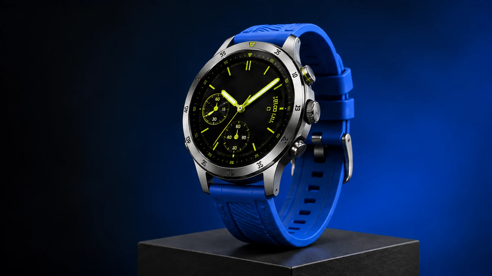

LE PARCOURS COMPLET
Chaque séquence
a une raison d’être.
Voici l’ordre recommandé pour l’accueil. Les pages modèles, exemples et comparaisons gardent leur rôle de réponse précise.
REVUE V1 · 09 SEPTEMBRE 2026 · PROPOSITION À DISCUTER
Une création que l’on voit naître.
Deux façons d’y arriver.
Un site qui donne envie de passer à l’action.
Support de conception, avant refonte intégrée.
Les médias existants servent à éprouver le récit.
Palette, typographie et nouvelle collection restent à valider.

01 / MONTRER AVANT D’EXPLIQUER
Une vraie création, au cœur de la page.
LE PARCOURS COMPLET
Voici l’ordre recommandé pour l’accueil. Les pages modèles, exemples et comparaisons gardent leur rôle de réponse précise.
EFFET SIGNATURE / CONSTRUCTION & DÉCONSTRUCTION
Déplacer le curseur pour examiner les états. Cette étude anime des plans graphiques ; elle ne prétend pas extraire la géométrie 3D de l’image.
Prototype final envisagé : progression liée au scroll natif et réversible. Sur mobile : trois étapes courtes en flux, sans écran bloqué. Sans mouvement : référence, transformation, résultat visibles. La vidéo se lit à la demande ; le scrub vidéo existant sera évalué séparément.
LA NOUVELLE COLLECTION PROPOSÉE
Un objet cinétique original en verre fumé et métal, avec un cœur lumineux : image de référence, trois compositions contrôlées, puis mouvement. Une seconde preuve de produit réel montre que l’univers artistique sert aussi un usage concret. ImageGen pour les états ; MaxVideoAI pour les sorties vidéo vérifiables. Le choix du sujet précède les générations.
SECONDE VOIE DE CRÉATION / MCP
Placer cette démonstration juste après la transformation suivie. Codex et Claude deviennent des points d’entrée concrets vers MaxVideoAI.
La référence reste identifiable du site au résultat.
CODEX OU CLAUDE → MAXVIDEOAI
« Prépare une vidéo de lancement à partir de ce site et de cette image produit. »
L’assistant utilise le contexte partagé et prépare une proposition.
Storyboard illustratif du parcours, pas une capture d’assistant ni un import automatique d’URL. Le résultat ci-dessus existe ; ce site de démonstration est une composition de revue. Signe OpenAI existant associé au libellé Codex, marque spécifique à vérifier. Une future capture devra documenter l’hôte, les références transmises, le devis et le résultat réel.
Contexte → proposition et validation → résultat. Le devis reste lisible. Les détails d’installation s’ouvrent depuis une action explicite vers la page MCP.
SIX RÉFÉRENCES PRÉCISES
Les petits dessins sont nos schémas d’adaptation, pas des captures des bibliothèques. Chaque source permet d’examiner la démo ou son code.
Aucun code tiers intégré. Versions, licence exacte, dépendances, clavier et tactile seront qualifiés avant sélection technique. La recherche élargie et les forums restent documentés dans le dossier de recherche.
LA QUALITÉ SE JOUE AUSSI ICI
Six contrats de détail pour éviter que le soin s’arrête au premier écran. Les deux essais ci-dessous sont locaux et ne lancent aucune action produit.
Poster conservé, fermeture visible, Échap et retour du focus. La vidéo s’arrête à la fermeture. Sur mobile, lecteur dans la largeur utile.
Exemple à cliquer : prêt → attente → échec → nouvel essai → succès. Dans le produit, ces états dépendront de la vraie réponse, jamais d’un délai décoratif.
LES DONNÉES QUI ORIENTENT LE PILOTE
des clics GSC Web viennent du mobile.
10 août–6 septembre · 695 / 1 775.
sessions « AI Assistant » dans GA4.
Même période · 7,33 % des sessions observées.
LCP affiché par Clarity, tous parcours.
Derniers 28 jours au 9 septembre · pas une mesure du seul accueil.
Protéger les exemples. LTX reste une entrée importante : 285 clics contre 386 sur les 28 jours précédents. En parallèle, Seedance progresse. La refonte doit conserver les URL et réponses utiles ; ces variations ne prouvent pas un effet du design.
Fiabiliser la mesure. 94,07 % du revenu GA4 apparaît dans « Unassigned ». Vérifier attribution, événements et retours paiement avant toute conclusion commerciale. Clarity signale des clics sans effet et une erreur de plein écran : enquêter sur les parcours concernés.
LA PROCHAINE VALIDATION
Recommandation : ce parcours, deux moments forts et un système d’interface sobre autour des créations.
Cette revue ne clôture pas l’audit : sessions Clarity détaillées, funnel GA4, crawl SEO et contrats CRM/Zoho restent à vérifier. Le prototype intégré devra apporter des mesures comparables de performance.
Ouvrir le plan directeur ↗